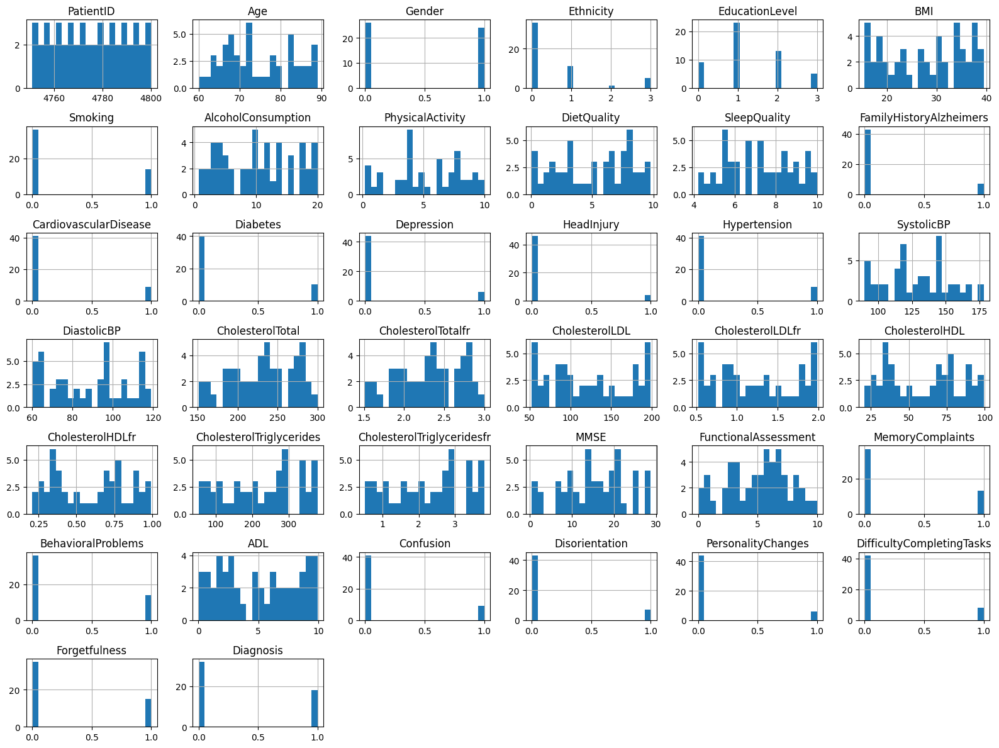
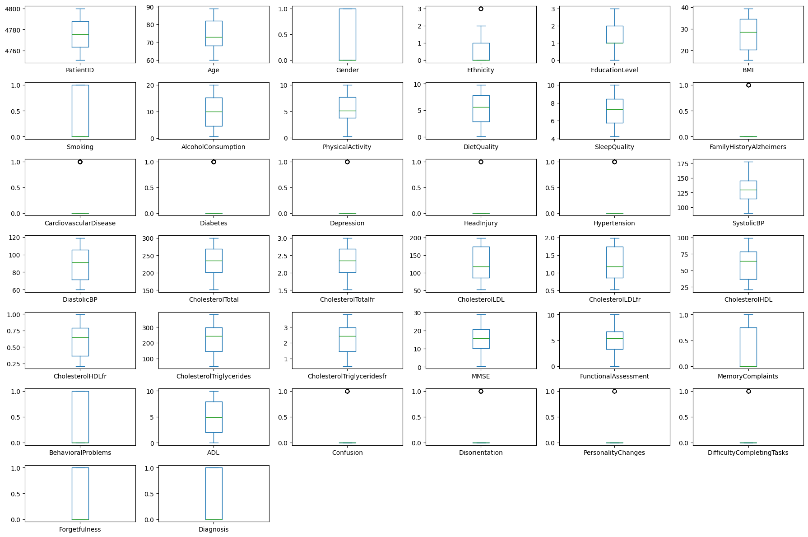
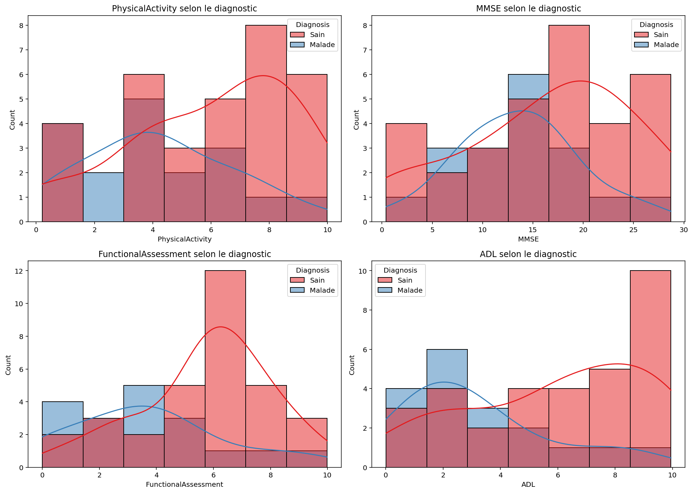

Explorer l'analyse exploratoire des données
Découvrez l'analyse des données: elle met en évidence les variables les plus liées au diagnostic, les résultats non significatifs et les principales limites d’interprétation. Les analyses reposent sur un échantillon de 50 patients décrit dans le notebook du projet.
NB : Toutes les analyses ont été effectuées en Python.
- Objectifs et questions étudiées
- Vue d’ensemble du jeu de données
- Résultats significatifs et non significatifs

Points clés
Présentation, description du jeu de données, résultats statistiques, puis discussion & limites.
1. PRÉSENTATION DE L’ANALYSE
Comprendre la démarche statistique
Objectif
L’objectif de cette analyse est d’explorer les relations possibles entre plusieurs variables cliniques, fonctionnelles et comportementales et le diagnostic d’Alzheimer. L’approche choisie est exploratoire : elle vise à repérer des signaux statistiques dans les données.
Questions étudiées
Deux questions principales guident cette page : quelles variables semblent les plus liées au diagnostic et dans quelle mesure ces observations peuvent être interprétées dans un cadre de santé publique.
Données utilisées
Les analyses reposent sur un fichier consacré à la pathologie d' Alzheimer, organisé dans une logique de base de données biomédicale, il s'agit en fait d'un fichier simplifié de notre base de données. Le notebook mobilise notamment des variables quantitatives comme l’âge, l’IMC, l’activité physique, le score MMSE... ainsi que plusieurs variables binaires comme MemoryComplaints, Hypertension...
En bref
- Thème : Dépendances
- Type d’approche : analyse exploratoire
- Jeu de données : dataset Alzheimer
- Langage de traitement : Python3
- Support utilisé : Jupyter Notebook
- Variable cible : Diagnosis
- Variables étudiées : quantitatives et qualitatives
- Bibliothèques : pandas, matplotlib, seaborn, scikit-learn...
- Tests : shapiro, QQ-Plots, test T Student, Kruskal-Wallis et Khi-2
2. VUE D’ENSEMBLE DU JEU DE DONNÉES
Décrire l’échantillon étudié
Taille et structure du jeu de données
Le jeu de données utilisé dans le notebook contient 50 lignes et 39 colonnes, dont 38 variables quantitatives ou codées numériquement décrites dans le tableau statistique résumé, ainsi qu’une colonne textuelle de confidentialité liée au médecin en charge.
| PatientID | Age | Gender | Ethnicity | EducationLevel | BMI | Smoking | AlcoholConsumption | PhysicalActivity | DietQuality | SleepQuality | FamilyHistoryAlzheimers | CardiovascularDisease | Diabetes | Depression | HeadInjury | Hypertension | SystolicBP | DiastolicBP | CholesterolTotal | CholesterolTotalfr | CholesterolLDL | CholesterolLDLfr | CholesterolHDL | CholesterolHDLfr | CholesterolTriglycerides | CholesterolTriglyceridesfr | MMSE | FunctionalAssessment | MemoryComplaints | BehavioralProblems | ADL | Confusion | Disorientation | PersonalityChanges | DifficultyCompletingTasks | Forgetfulness | Diagnosis | DoctorInCharge | |
|---|---|---|---|---|---|---|---|---|---|---|---|---|---|---|---|---|---|---|---|---|---|---|---|---|---|---|---|---|---|---|---|---|---|---|---|---|---|---|---|
| 0 | 4751 | 73 | 0 | 0 | 2 | 22.927749 | 0 | 13.297218 | 6.327112 | 1.347214 | 9.025679 | 0 | 0 | 1 | 1 | 0 | 0 | 142 | 72 | 242.366840 | 2.423668 | 56.150897 | 0.561509 | 33.682564 | 0.336826 | 162.189143 | 1.621891 | 21.463532 | 6.518877 | 0 | 0 | 1.725883 | 0 | 0 | 0 | 1 | 0 | 0 | XXXConfid |
| 1 | 4752 | 89 | 0 | 0 | 0 | 26.827681 | 0 | 4.542524 | 7.619885 | 0.518767 | 7.151293 | 0 | 0 | 0 | 0 | 0 | 0 | 115 | 64 | 231.162595 | 2.311626 | 193.407995 | 1.934080 | 79.028477 | 0.790285 | 294.630909 | 2.946309 | 20.613267 | 7.118696 | 0 | 0 | 2.592424 | 0 | 0 | 0 | 0 | 1 | 0 | XXXConfid |
| 2 | 4753 | 73 | 0 | 3 | 1 | 17.795882 | 0 | 19.555085 | 7.844988 | 1.826335 | 9.673574 | 1 | 0 | 0 | 0 | 0 | 0 | 99 | 116 | 284.181858 | 2.841819 | 153.322762 | 1.533228 | 69.772292 | 0.697723 | 83.638324 | 0.836383 | 7.356249 | 5.895077 | 0 | 0 | 7.119548 | 0 | 1 | 0 | 1 | 0 | 0 | XXXConfid |
| 3 | 4754 | 74 | 1 | 0 | 1 | 33.800817 | 1 | 12.209266 | 8.428001 | 7.435604 | 8.392554 | 0 | 0 | 0 | 0 | 0 | 0 | 118 | 115 | 159.582240 | 1.595822 | 65.366637 | 0.653666 | 68.457491 | 0.684575 | 277.577358 | 2.775774 | 13.991127 | 8.965106 | 0 | 1 | 6.481226 | 0 | 0 | 0 | 0 | 0 | 0 | XXXConfid |
| 4 | 4755 | 89 | 0 | 0 | 0 | 20.716974 | 0 | 18.454356 | 6.310461 | 0.795498 | 5.597238 | 0 | 0 | 0 | 0 | 0 | 0 | 94 | 117 | 237.602184 | 2.376022 | 92.869700 | 0.928697 | 56.874305 | 0.568743 | 291.198780 | 2.911988 | 13.517609 | 6.045039 | 0 | 0 | 0.014691 | 0 | 0 | 1 | 1 | 0 | 0 | XXXConfid |
Variables retenues
Nous avons fait le choix de garder certaines variables pour leur étude : Comme variables quantitatives, on a : PhysicalActivity, MMSE, FunctionalAssessment et ADL. Et des variables qualitatives comme MemoryComplaints, Hypertension, Diabetes et Depression ont également été examinées vis-à-vis du diagnostic.
Profil général de l’échantillon
L’âge moyen de l’échantillon est de 74,62 ans, avec des valeurs allant de 60 à 89 ans, et l’IMC moyen est de 27,80. La variable Diagnosis a une moyenne de 0,36, ce qui correspond ici à environ 36 % de diagnostics positifs dans l’échantillon observé.
- 50 patients étudiés
- 39 colonnes au total
- Âge moyen : 74,62 ans
- IMC moyen : 27,80
- Diagnostics positifs : 36 %
| PatientID | Age | Gender | Ethnicity | EducationLevel | BMI | Smoking | AlcoholConsumption | PhysicalActivity | DietQuality | SleepQuality | FamilyHistoryAlzheimers | CardiovascularDisease | Diabetes | Depression | HeadInjury | Hypertension | SystolicBP | DiastolicBP | CholesterolTotal | CholesterolTotalfr | CholesterolLDL | CholesterolLDLfr | CholesterolHDL | CholesterolHDLfr | CholesterolTriglycerides | CholesterolTriglyceridesfr | MMSE | FunctionalAssessment | MemoryComplaints | BehavioralProblems | ADL | Confusion | Disorientation | PersonalityChanges | DifficultyCompletingTasks | Forgetfulness | Diagnosis | |
|---|---|---|---|---|---|---|---|---|---|---|---|---|---|---|---|---|---|---|---|---|---|---|---|---|---|---|---|---|---|---|---|---|---|---|---|---|---|---|
| count | 50.00000 | 50.000000 | 50.000000 | 50.000000 | 50.000000 | 50.000000 | 50.000000 | 50.000000 | 50.000000 | 50.000000 | 50.000000 | 50.00000 | 50.000000 | 50.000000 | 50.000000 | 50.000000 | 50.000000 | 50.000000 | 50.000000 | 50.000000 | 50.000000 | 50.000000 | 50.000000 | 50.000000 | 50.000000 | 50.000000 | 50.000000 | 50.000000 | 50.000000 | 50.000000 | 50.000000 | 50.000000 | 50.000000 | 50.00000 | 50.000000 | 50.000000 | 50.00000 | 50.000000 |
| mean | 4775.50000 | 74.620000 | 0.480000 | 0.560000 | 1.280000 | 27.804723 | 0.280000 | 10.322052 | 5.353084 | 5.171401 | 7.199956 | 0.14000 | 0.180000 | 0.200000 | 0.120000 | 0.080000 | 0.180000 | 129.120000 | 88.320000 | 231.989932 | 2.319899 | 123.115395 | 1.231154 | 59.544329 | 0.595443 | 228.332147 | 2.283321 | 15.462639 | 5.028266 | 0.260000 | 0.280000 | 4.987159 | 0.180000 | 0.14000 | 0.120000 | 0.160000 | 0.30000 | 0.360000 |
| std | 14.57738 | 8.363892 | 0.504672 | 0.951047 | 0.881557 | 7.777913 | 0.453557 | 5.851491 | 2.805583 | 2.956505 | 1.636942 | 0.35051 | 0.388088 | 0.404061 | 0.328261 | 0.274048 | 0.388088 | 23.568952 | 19.418527 | 40.472237 | 0.404722 | 48.353840 | 0.483538 | 24.118068 | 0.241181 | 101.685421 | 1.016854 | 7.660403 | 2.567126 | 0.443087 | 0.453557 | 3.201691 | 0.388088 | 0.35051 | 0.328261 | 0.370328 | 0.46291 | 0.484873 |
| min | 4751.00000 | 60.000000 | 0.000000 | 0.000000 | 0.000000 | 15.457688 | 0.000000 | 0.646047 | 0.211062 | 0.043147 | 4.213210 | 0.00000 | 0.000000 | 0.000000 | 0.000000 | 0.000000 | 0.000000 | 90.000000 | 60.000000 | 151.383137 | 1.513831 | 52.470670 | 0.524707 | 20.887996 | 0.208880 | 52.786946 | 0.527869 | 0.411316 | 0.000460 | 0.000000 | 0.000000 | 0.014691 | 0.000000 | 0.00000 | 0.000000 | 0.000000 | 0.00000 | 0.000000 |
| 25% | 4763.25000 | 68.000000 | 0.000000 | 0.000000 | 1.000000 | 20.210294 | 0.000000 | 4.579948 | 3.707536 | 2.874901 | 5.727795 | 0.00000 | 0.000000 | 0.000000 | 0.000000 | 0.000000 | 0.000000 | 114.250000 | 71.250000 | 200.780496 | 2.007805 | 85.927708 | 0.859277 | 36.502650 | 0.365026 | 145.923027 | 1.459230 | 10.143516 | 3.251375 | 0.000000 | 0.000000 | 2.042115 | 0.000000 | 0.00000 | 0.000000 | 0.000000 | 0.00000 | 0.000000 |
| 50% | 4775.50000 | 73.000000 | 0.000000 | 0.000000 | 1.000000 | 28.406758 | 0.000000 | 10.030779 | 5.152913 | 5.632581 | 7.258958 | 0.00000 | 0.000000 | 0.000000 | 0.000000 | 0.000000 | 0.000000 | 129.500000 | 91.000000 | 234.988145 | 2.349881 | 117.777823 | 1.177778 | 64.251576 | 0.642516 | 243.360045 | 2.433600 | 15.645178 | 5.349840 | 0.000000 | 0.000000 | 4.934362 | 0.000000 | 0.00000 | 0.000000 | 0.000000 | 0.00000 | 0.000000 |
| 75% | 4787.75000 | 82.000000 | 1.000000 | 1.000000 | 2.000000 | 34.533238 | 1.000000 | 15.288010 | 7.717830 | 7.848342 | 8.453578 | 0.00000 | 0.000000 | 0.000000 | 0.000000 | 0.000000 | 0.000000 | 145.000000 | 105.500000 | 268.733981 | 2.687340 | 173.828120 | 1.738281 | 78.783718 | 0.787837 | 296.963851 | 2.969639 | 20.572232 | 6.744080 | 0.750000 | 1.000000 | 7.940309 | 0.000000 | 0.00000 | 0.000000 | 0.000000 | 1.00000 | 1.000000 |
| max | 4800.00000 | 89.000000 | 1.000000 | 3.000000 | 3.000000 | 39.463034 | 1.000000 | 19.966670 | 9.986554 | 9.767579 | 9.999201 | 1.00000 | 1.000000 | 1.000000 | 1.000000 | 1.000000 | 1.000000 | 178.000000 | 119.000000 | 299.868483 | 2.998685 | 198.449864 | 1.984499 | 99.286339 | 0.992863 | 379.482763 | 3.794828 | 28.715932 | 9.986441 | 1.000000 | 1.000000 | 9.947440 | 1.000000 | 1.00000 | 1.000000 | 1.000000 | 1.00000 | 1.000000 |


3. RÉSULTATS
Identifier les variables les plus liées au diagnostic
3.1 Variables les plus liées au diagnostic
Parmi les variables quantitatives testées, FunctionalAssessment présente une différence statistiquement significative entre les groupes avec et sans diagnostic, avec une moyenne de 5,77 pour Diagnosis = 0 contre 3,70 pour Diagnosis = 1, et une p-value de 0,008463. Cette variable ressort donc comme l’un des signaux les plus marqués dans cette analyse.
L'étude montre aussi que PhysicalActivity et ADL ont été retenues parmi les variables importantes de l’analyse exploratoire, avec un examen préalable de la normalité par le test de Shapiro-Wilk. PhysicalActivity n’est pas distribuée normalement dans cet échantillon (p = 0,035481) et ADL non plus (p = 0,003317).
3.2 Résultats non significatifs
Le score MMSE ne montre pas de différence statistiquement significative entre les groupes dans cette analyse, malgré une moyenne plus faible chez les patients diagnostiqués. Les moyennes sont de 16,56 pour Diagnosis = 0 et 13,51 pour Diagnosis = 1, avec une p-value de 0,138671, supérieure au seuil usuel de 0,05.
Tests
- Seuil α (p) : 5%
- Shapiro test & QQ-Plot : Normalité
- Test T Student : Dépendances (quantitative ~ catégorielle)
- Kruskal-Wallis : Dépendances non-paramétriques
- Khi-2 : Dépendances (catégorielle ~ catégorielle)

4. DISCUSSION & LIMITES
Cette analyse met en avant quelques dépendances intéressantes, en particulier autour de l’évaluation fonctionnelle, mais elle reste exploratoire. Le faible effectif (n=50) et l’hétérogénéité des variables limitent fortement la portée des conclusions.
Dans une perspective de Santé Publique, ces résultats peuvent néanmoins servir de support pour montrer comment sélectionner des variables, comparer des groupes et discuter des conditions d’interprétation d’un résultat statistique. La suite du travail pourrait intégrer un échantillon plus large, des tests mieux adaptés aux distributions observées et l'inclusion de modèle de prédiction.
Poursuivre avec la recherche